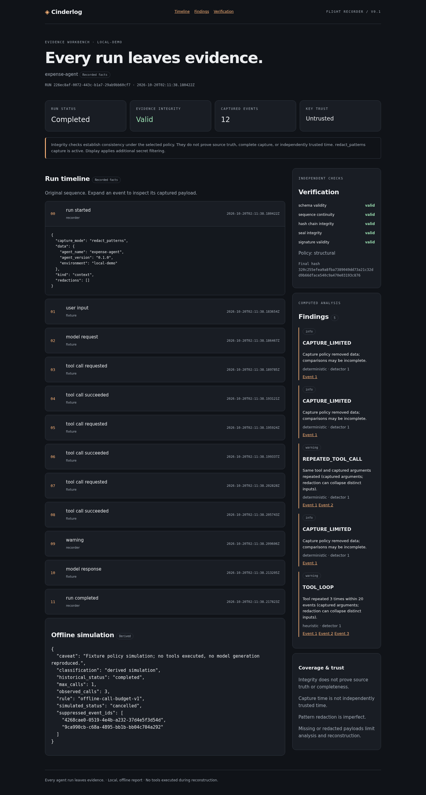
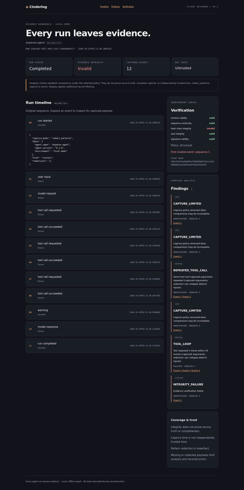
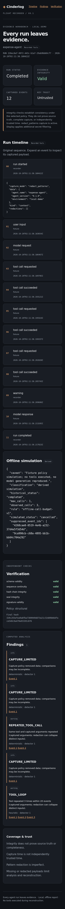

Agent evidence / engineering investigation
The agent ran successfully.
Can you prove what happened?
A reimbursement loop, an altered record, and the engineering contract between what an agent did and what a reviewer can verify.
The ordinary request
The request is small enough to disappear into a normal workday: “What is the status of expense EXP-1042?” An assistant looks up the record and answers that the reimbursement is pending. The user gets an answer. The run finishes successfully. A green completion marker seems reasonable.
Now follow the execution rather than the answer. The assistant asked get_expense_status for the same expense three times. Each request produced the same fictional pending record. Nothing in the final sentence explains why the calls repeated. For an engineer, the interesting question is no longer whether the assistant answered. It is what the execution actually did, and which parts of that account can be checked later.
This is the incident I used to build Cinderlog. It is a deterministic fixture, not a recording of an actual employee or financial system. No reimbursement is paid, no HR service is contacted, and no model API is required. Keeping the incident fictional makes it possible to alter its evidence deliberately and test the investigator’s tools without exposing customer data.
The first result is deliberately uncomfortable: a completed run with a loop warning. The second is more revealing: another record still says completed, but its captured user input has been changed. A dashboard that shows only the outcome would tell the same story about both. An evidence workbench should not.
The run outcome describes how execution ended. The evidence verdict describes whether the retained record satisfies a verification policy. Neither one can stand in for the other.
The investigation changes the question
Imagine a runtime engineer handing the run to an incident reviewer. The engineer wants to know whether the repeated requests came from the agent or an adapter. The reviewer wants to establish that the file has not changed since the retained seal. A privacy owner wants to know what the file contains before it is shared. Those are different questions, with different proof obligations.
An ordinary trace can be excellent for performance analysis and still be insufficient as an independently checkable artifact. A log line may omit tool arguments. A dashboard may derive its summary from editable database fields. Export might preserve display text while losing ordering or producer identity. A cryptographic signature may verify under a key that arrived in the same file, without establishing who controlled that key.
Cinderlog’s job is to make these distinctions inspectable. It records a bounded session as typed, ordered events; retains a chain commitment and a run seal; verifies a portable bundle without instantiating the recorder; and reconstructs the observed sequence without executing tools. Analysis and presentation come after that evidence contract.
The design is local-first because the first proof should survive losing the dashboard. An engineer can run the verifier on JSON in another local environment. SQLite is convenient storage, but the portable bundle is the review artifact. The browser is useful presentation, but it is not the authority for authenticity.
An architecture with three boundaries
The architecture separates capture, local persistence, and independent review. These are responsibility boundaries in a small Python application, not a proposal for nine deployed services. Keeping them explicit makes it possible to ask what each component can promise and how it can fail.
The capture adapter submits observations. The recorder assigns event IDs, capture time, sequence, and producer labels. The capture policy removes selected values before persistence. Typed validation and canonical serialization define the bytes that enter the chain. This boundary does not prove source truth: a compromised source can still submit a fabricated observation.
The persistence boundary owns ordering and finalization. SQLite transactions allocate one sequence per run. Finalization adds the terminal event and commits finalized metadata, the seal, and optional signature together. Private key custody sits beside that process rather than inside the evidence database. The append-only application API rejects later appends; a process with file access can still modify SQLite directly.
The review boundary treats both database contents and exported bundles as evidence to check. It recomputes digests, validates sequence and lifecycle, checks the seal, validates a signature, and enforces a supplied trust fingerprint. Reconstruction, deterministic findings, and a static report consume those results. They cannot turn a successful execution status into a valid evidence verdict.
Follow the observation. Keep the trust boundary.
Select a component to inspect its contract and failure posture.
01 · Capture boundary
02 · Local evidence boundary
03 · Independent review boundary
This arrangement has a practical benefit: the verifier does not need to trust the recorder’s control flow. The two share the documented byte contract, but recording and verification are independently orchestrated. Golden vectors matter because agreement between two components can hide a shared serialization mistake.
What enters the record
A run begins at sequence zero with run_started. Every event contains an ID, run ID, sequence, UTC capture timestamp, event type, producer, typed payload, previous hash, and its own digest. Optional correlation and parent/span identifiers provide an extension seam without introducing a full tracing platform.
The expense fixture records the input, a model-request fixture message, three tool requests and results, a warning, a model-response fixture message, and a terminal event. Those model messages are deterministic fixture content. They are not hidden model reasoning or evidence that a live model made this decision.
Payloads retain their capture mode and redaction audits. The default request includes a fictional credential field. Before the event reaches SQLite, the value becomes [REDACTED]; a rule identifier and JSON path remain. The record can establish that this field was filtered without retaining the removed value in an operational log.
That choice affects analysis. Two different raw credentials become the same captured marker. If a detector compares captured arguments, it can see an apparent repeated request even when an omitted value differed. Cinderlog qualifies the comparison. Metadata-only capture is more restrictive: content is absent by policy, so no reconstruction should invent it.
Why redaction happens before hashing
Filtering before hashing gives the signature a precise meaning: it commits to the captured, policy-filtered record. It does not commit to recoverable raw payloads hidden somewhere else. That reduces secret retention and simplifies portable review, but also means the reviewer cannot reconstruct removed content.
Imported evidence creates another boundary. The report applies additional display filtering without changing the source bytes used by verification. Export preserves the original signed evidence. Silently redacting an export and preserving the original signature would create a false assurance claim; a changed artifact would need its own seal and clear provenance.
The byte contract is the product
The central engineering decision is not the dashboard layout. It is the exact serialization contract another implementation would have to reproduce. Cinderlog v1 uses UTF-8, lexicographically sorted object keys, compact separators, unchanged Unicode strings, and strict supported JSON values. Integers fit signed 64-bit range. Floats are rejected; monetary amounts use decimal strings.
The restriction is intentional. General JSON permits values whose representation varies across languages and runtimes. Floating-point normalization, negative zero, and exponent formatting deserve a complete interoperability contract. The small first version avoids claiming RFC 8785 compliance it does not implement. It also rejects duplicate object keys rather than allowing parser-specific interpretations.
body = {key: value for key, value in event.items() if key != "event_hash"}
event_hash = sha256(b"cinderlog:event:v1:" + canonical(body)).hexdigest()
The previous hash appears inside that canonical object exactly once. Genesis is 32 zero bytes. A fixed domain separator distinguishes event hashing from other digest uses. The event cannot include its own digest in the bytes being hashed. The format document and golden vectors specify the actual behavior rather than saying merely “serialize consistently.”
At finalization, the seal commits to run ID, schema, count, final hash, outcome, sealing timestamp, and a digest of finalized run metadata. Ed25519 signs a separately domain-prefixed canonical seal. The metadata digest prevents an editable display name or agent version from floating outside the signed commitment.
Ordering is a transaction concern
A hash chain does not solve concurrent sequence allocation. SQLite’s BEGIN IMMEDIATE serializes mutations for a run before the next event is assembled and appended. Event IDs and (run_id, sequence) are unique. A failed validation rolls back the transaction. Tests exercise concurrent appends and a rejected append that leaves the original record unchanged.
The final terminal event, metadata, seal, and signature are committed atomically. Public interfaces reject events after finalization. A hard crash remains different from graceful interruption: it can leave an unfinished, unsealed run. Cinderlog can show that incomplete record, but final verification must not label it complete or invent a terminal event that was never observed.
One sentence breaks the retained chain
The adversarial demo edits a copy of the exported run. At sequence 1, the original reimbursement request becomes an altered request. The stored event hash is not regenerated. The subsequent links still refer to the old commitment. The run outcome remains completed, and the original seal and signature remain in the file.
This is where the separate checks earn their place. Recomputing the modified event detects the first invalid sequence. Comparing the resulting chain with the retained seal fails. Verifying the seal’s signature can still succeed because the seal bytes themselves did not change. A signature check in isolation would therefore miss the relationship that failed.
One altered sentence. Two different verdicts.
A 36-second explanation of capture, sealing, alteration, and independent verification.
Selected events only. Arrows stand for the chain of intervening events; sequence 01 is the actual tamper target.
The run completed. The calls repeated.
A successful run outcome is independent of evidence integrity.
The animation explains the actual fixture’s mechanism; it is not a live recording or telemetry feed. It intentionally shows signature validity separately from chain and seal integrity. The static article remains the technical account when animation is paused, reduced motion is enabled, or JavaScript is unavailable.
| Check | Original demo | Altered copy | What the result establishes |
|---|---|---|---|
| Run outcome | completed | completed | Recorded terminal outcome |
| Sequence continuity | valid | valid | No sequence was removed in this particular edit |
| Hash chain | valid | invalid | Captured bytes no longer match retained links |
| Seal integrity | valid | invalid | The recomputed record no longer matches its seal |
| Signature validity | valid | valid | Unchanged seal bytes verify under the bundled key |
| Key trust | untrusted | untrusted | The demo provides no independent identity reference |
| Overall / exit | valid / 0 | invalid / 1 | Result under the selected structural policy |
The original is verified again after the copy is altered and still passes. That last check is small but useful: the demonstration must not mutate its source while constructing the failure case. The acceptance script asserts concrete exit codes and the first invalid sequence, rather than merely checking that commands returned without exceptions.
The workbench keeps the contradiction visible
A useful investigation surface should show the apparent contradiction immediately: RUN STATUS is completed while EVIDENCE INTEGRITY is invalid. Signature and key trust are also visible, alongside a timeline, payload expansion, findings, and references back to the affected events.

The original report exposes the captured redaction policy and the possible loop. A reviewer can follow the repeated calls in sequence and inspect their captured argument/result envelopes. The UI does not claim that it knows why a live model chose those calls. It shows the recorded messages and observations available in the fixture.

The altered report preserves the run outcome while displaying the invalid verdict and first invalid event. This is a deliberate presentation requirement: damaged evidence remains inspectable, but it must not become a success-looking artifact simply because its terminal event says completed.

The report uses local CSS, native expandable event controls, no scripts or remote assets, and escaped untrusted payloads. Article animations are a separate publication layer; they do not add executable content to the evidence report. Mobile and keyboard review are part of the publication workflow, alongside tests that malicious payloads do not become HTML or scripts.
Three kinds of replay, three kinds of claim
As-is reconstruction displays recorded facts. It does not contact the tool adapter, execute a payment, or ask a model to generate another answer. The evidence can be incomplete, and reconstruction must inherit that limitation. Preserving the order does not recover uncaptured context.
Diff compares event type, producer, captured payload, and terminal outcome. IDs and capture timestamps are reported separately as envelope differences so two otherwise equivalent fixture records do not look behaviorally different merely because their run IDs changed. Redacted inputs also constrain what a semantic comparison can establish.
The v0.1 simulation is deliberately small: apply a deterministic maximum-call budget to a copy of the recorded calls. A three-call fixture under a one-call budget yields a derived cancelled outcome and references the later calls. This is an explanation of a policy rule, not proof that the historical model would have stopped after its first request. There is no model-generation reproduction, external write, or source-record mutation.
These distinctions prevent a familiar debugging error: presenting a plausible rerun as the historical execution. A simulated outcome can help formulate a fix. A retained record helps establish what was observed. They answer related questions, but their provenance is different.
What an enterprise reviewer can rely on
Enterprise relevance comes from explicit proof obligations, not from making a local prototype sound certified. A platform team can use the current version to investigate fictional or safely instrumented local runs and to exercise a portable evidence contract. Production adoption would need source-specific instrumentation, data handling, protected key custody, retention, and operational ownership.
| Claim | Implemented mechanism | Local proof | Remaining boundary |
|---|---|---|---|
| Detect retained-event alteration | Recompute chain and compare seal | Edit/delete/reorder/truncate tests | A compromised capture source can lie |
| Preserve ordered appends | Serialized SQLite mutations and uniqueness | Concurrent-append and rollback tests | File-level attackers can edit SQLite |
| Enforce chosen trust reference | Signature check plus independent fingerprint | Substitution and wrong-pin tests | Key ownership/custody needs external controls |
| Minimize obvious credentials | Pre-persistence patterns and deny paths | Canary absent from DB/export/terminal/HTML | Custom/encoded secrets can evade patterns |
| Reconstruct without side effects | Data-only replay and offline fixture simulation | Socket-blocked execution and immutability checks | Future adapters must preserve the invariant |
| Safe portable input/display | Strict versions, bounds, escaped report | Malformed/oversized and injection tests | Limits need tuning for larger workloads |
There are several ways a stronger attacker can exceed this envelope. Stealing the private key permits new forged seals. Replacing an unsigned record and regenerating its hashes defeats structural authenticity claims. Replacing a bundle and its bundled public key produces a self-consistent story without an independently pinned identity. Changing local time can influence capture timestamps. Uninstrumented tool actions leave no record to verify.
Independent anchoring could constrain later rewriting relative to a retained external checkpoint. It would not establish source truth. Hardware-backed key custody could reduce exposure of signing material. It would not make incomplete instrumentation complete. Those controls are complementary and need owners, failure procedures, and tested contracts of their own.
What the implementation actually proved
The final local suite passed 30 tests. It covers golden serialization bytes, unsupported values, event tampering, deletion, reordering, duplicate sequences, truncation, metadata and seal changes, invalid signatures, substituted keys, independently pinned trust, deterministic fixtures, concurrent appends, rollback, lifecycle rejection, CLI exit codes, findings, diff, simulation, HTML injection, malformed/oversized inputs, redaction, and key permissions.
The demo is also exercised with socket creation blocked. The secret canary is checked across persisted/exported artifacts, terminal output, and HTML. A fresh wheel installation generated the report successfully, which checks that package data and the installed CLI work beyond an editable checkout.
Local Ruff lint and formatting, strict mypy checks, package build, locked offline dependency sync, and the end-to-end acceptance script passed. The repository contains a GitHub Actions workflow, but there has been no hosted CI run because nothing has been pushed. There is no independent audit, production certification, or claimed performance benchmark.
Browser screenshot capture is an additional proof step. The sandbox used to implement this version blocks Chromium socket operations. The capture script is prepared to run in a browser-capable environment; until it has actually produced images, the publication must mark screenshot slots as pending instead of inserting fabricated UI illustrations.
Reproduce the investigation
Dependency installation may use the network. The recorded demo, verification, replay, and report generation require no credentials, GPU, or network access once installed.
uv sync --all-groups --locked
uv run cinderlog demo --output review/demo
uv run cinderlog verify review/demo/run.cinderlog.json --json
uv run cinderlog verify review/demo/tampered.cinderlog.json --json
# Original exits 0. Altered copy exits 1 at sequence 1.
uv run cinderlog replay review/demo/run.cinderlog.json --json
uv run cinderlog simulate review/demo/run.cinderlog.json --max-calls 1
bash scripts/e2e_acceptance.sh
For independent key trust, create an Ed25519 pair explicitly, record with --key, and pass the fingerprint to verification through an independent channel. The default demo’s ephemeral key supplies a working signature exercise, not identity assurance.
uv run cinderlog keygen --output /tmp/cinderlog-keys/private.pem
uv run cinderlog record-demo --key /tmp/cinderlog-keys/private.pem
uv run cinderlog verify RUN_ID --policy trusted --trusted-fingerprint FINGERPRINT
Open the original and altered HTML reports side by side. Expand the user input and tool payloads. Follow the findings to their event references. Confirm that the original’s valid signature still has untrusted identity unless a pin is supplied. This review is about reading the mechanism and its limits, not merely admiring a green badge.
Return to the expense request
The employee still sees a pending reimbursement. Cinderlog does not change that result or enforce a tool-call budget on a real agent. What changes is the engineer’s ability to inspect the execution: three captured requests, policy-filtered arguments, a retained seal, and a verifier that can reject an altered copy without consulting the dashboard.
That is the useful first increment. Next comes source mapping for OpenTelemetry, an MCP observation adapter, and a crash journal that preserves incomplete history honestly. External anchors and a team collector would follow after the local evidence contract has earned reuse. Optional generated interpretation would cite event references and stay separate from deterministic verification.
The workbench is small by design. Its credibility comes from saying exactly what was retained, what was recomputed, which key was trusted, and where reconstruction stops. A completed run can be a starting point for investigation. It should not be the end of the evidence story.
Source and publication status
The implementation, format, threat model, and MIT license are available in the local Cinderlog checkout. The intended remote repository is https://github.com/mailtotanvir/Cinderlog; remote creation/availability and public CI are not asserted here. Application push and blog publication remain pending owner review.
The reading layout and interactive explanation approach were informed by the owner’s gridOS article and the requested enterprise portfolio reference. The local gridOS source was inspected; live reference retrieval was unavailable in this sandbox. These are design references, not evidence that Cinderlog implements gridOS or has enterprise certification.